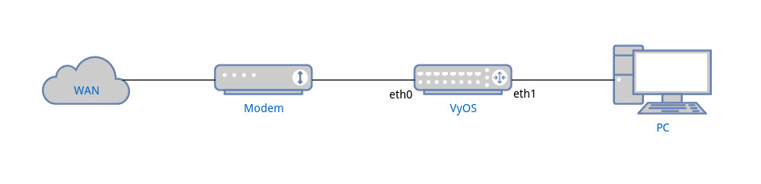

PPPoE IPv6 Basic Setup for Home Network
This document is to describe a basic setup using PPPoE with DHCPv6-PD + SLAAC to construct a typical home network. The user can follow the steps described here to quickly setup a working network and use this as a starting point to further configure or fine-tune other settings.
To achieve this, your ISP is required to support DHCPv6-PD. If you’re not sure, please contact your ISP for more information.
Network Topology
{kind=link}
Configurations
PPPoE Setup
set interfaces pppoe pppoe0 authentication password <YOUR PASSWORD>
set interfaces pppoe pppoe0 authentication user <YOUR USERNAME>
set interfaces pppoe pppoe0 service-name <YOUR SERVICENAME>
set interfaces pppoe pppoe0 source-interface 'eth0'
Fill
passwordanduserwith the credential provided by your ISP.service-namecan be an arbitrary string.
DHCPv6-PD Setup
During address configuration, in addition to assigning an address to the WAN interface, ISP also provides a prefix to allow the router to configure addresses of LAN interface and other nodes connecting to LAN, which is called prefix delegation (PD).
set interfaces pppoe pppoe0 ipv6 address autoconf
set interfaces pppoe pppoe0 dhcpv6-options pd 0 interface eth1 address '100'
Here we use the prefix to configure the address of eth1 (LAN) to form
<prefix>::64, where64is hexadecimal of address 100.For home network users, most of time ISP only provides /64 prefix, hence there is no need to set SLA ID and prefix length. See PPPoE for more information.
Router Advertisement
We need to enable router advertisement for LAN network so that PC can receive the prefix and use SLAAC to configure the address automatically.
set service router-advert interface eth1 link-mtu '1492'
set service router-advert interface eth1 name-server <NAME SERVER>
set service router-advert interface eth1 prefix ::/64 valid-lifetime '172800'
Set MTU in advertisement to 1492 because of PPPoE header overhead.
Set DNS server address in the advertisement so that clients can obtain it by using RDNSS option. Most operating systems (Windows, Linux, Mac) should already support it.
Here we set the prefix to
::/64to indicate advertising any /64 prefix the LAN interface is assigned.Since some ISPs disconnects continuous connection for every 2~3 days, we set
valid-lifetimeto 2 days to allow PC for phasing out old address.
Basic Firewall
To have basic protection while keeping IPv6 network functional, we need to:
Allow all established and related traffic for router and LAN
Allow all icmpv6 packets for router and LAN
Allow DHCPv6 packets for router
set firewall ipv6 name WAN_IN default-action 'drop'
set firewall ipv6 name WAN_IN rule 10 action 'accept'
set firewall ipv6 name WAN_IN rule 10 state established 'enable'
set firewall ipv6 name WAN_IN rule 10 state related 'enable'
set firewall ipv6 name WAN_IN rule 20 action 'accept'
set firewall ipv6 name WAN_IN rule 20 protocol 'icmpv6'
set firewall ipv6 name WAN_LOCAL default-action 'drop'
set firewall ipv6 name WAN_LOCAL rule 10 action 'accept'
set firewall ipv6 name WAN_LOCAL rule 10 state established 'enable'
set firewall ipv6 name WAN_LOCAL rule 10 state related 'enable'
set firewall ipv6 name WAN_LOCAL rule 20 action 'accept'
set firewall ipv6 name WAN_LOCAL rule 20 protocol 'icmpv6'
set firewall ipv6 name WAN_LOCAL rule 30 action 'accept'
set firewall ipv6 name WAN_LOCAL rule 30 destination port '546'
set firewall ipv6 name WAN_LOCAL rule 30 protocol 'udp'
set firewall ipv6 name WAN_LOCAL rule 30 source port '547'
set firewall ipv6 forward filter rule 10 action jump
set firewall ipv6 forward filter rule 10 jump-target 'WAN_IN'
set firewall ipv6 forward filter rule 10 inbound-interface name 'pppoe0'
set firewall ipv6 input filter rule 10 action jump
set firewall ipv6 input filter rule 10 jump-target 'WAN_LOCAL'
set firewall ipv6 input filter rule 10 inbound-interface name 'pppoe0'
Note to allow the router to receive DHCPv6 response from ISP. We need to allow packets with source port 547 (server) and destination port 546 (client).